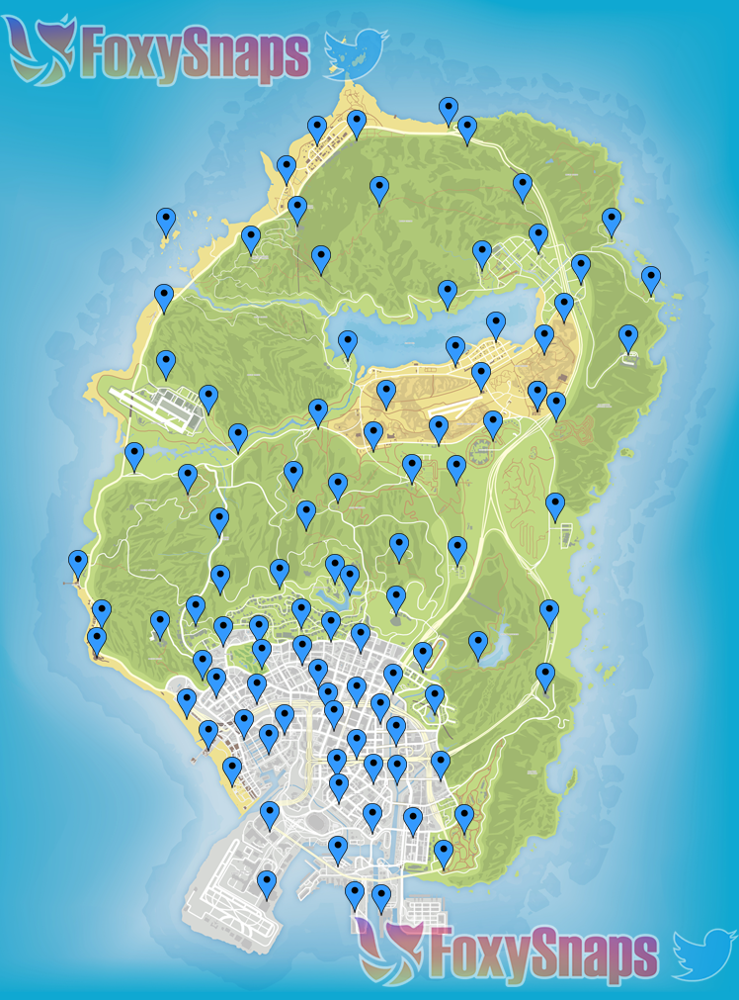
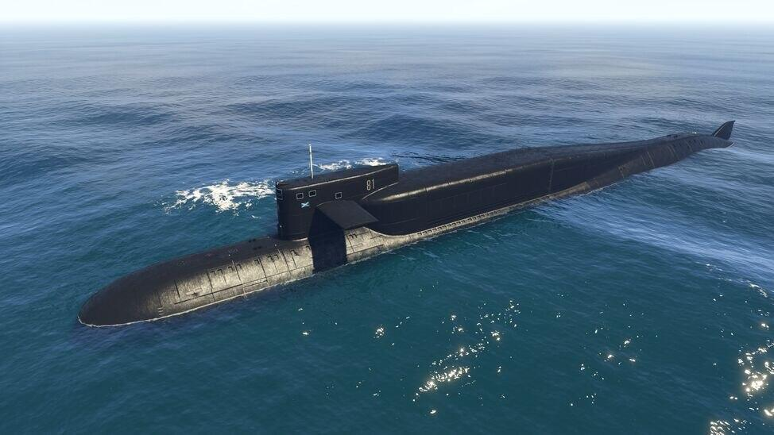

Witaj oto poradnik jak zacząć swoj przygodę z gta 5 online także usiądź wygodnie a ja wszystko wytłumacze
Witaj oto poradnik jak zacząć swoj przygodę z gta 5 online także usiądź wygodnie a ja wszystko wytłumacze
Od czego polecam zacząć
Polecam zacząć od znalezienia sobie ekipy na różnych portalach internetowych takich jak discord lub zaproszenia do wspólnej gry znajomych
Szukanie znajdźek
Bardzo polecam szukanie znajdźek,są do zbierania między innymi figurki,karty do gry które można znaleźć na całej mapie tutaj macie ich lokalizacje:

kupienie mieszkania
Sugeruje zakup mieszkania, w którym można robić misje za które dostaniecie około 200000 tysięcy i zbierać na zakup kosatki
Top 3 opłacalne misje
| Cayo Perico | Przygotowania do misji | 1400000 |
| Kasyno | Napad na kasyno | 1000000 |
| Ucieczka z więzienia | Napady mieszkaniowe | 900000 |
Kosatka
Kosatka jedna z ważniejszych rzeczy w gta online jeżeli nazbieracie wystarczającą ilość pieniędzy czyli 2 miliony możecie kupić kosatkę która jak zrobicie misje da dużo kasy

I to tyle jeżeli chodzi o kwestie zarabiania pieniędzy i mam nadzieję że pomogłem.
dziękuje za przeczytanie i pozdrawiam
po więcej ciekawostek zapraszam do tego kanału nie jest mój ale można się z niego dużo dowiedzieć
Kliknij po więcej ciekawostek